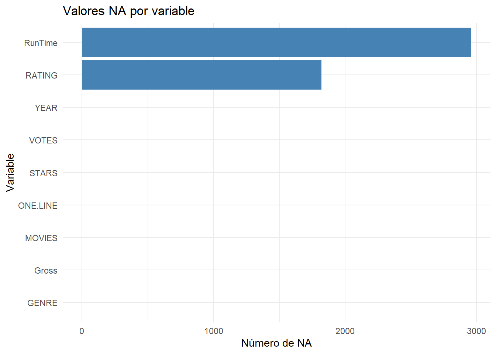
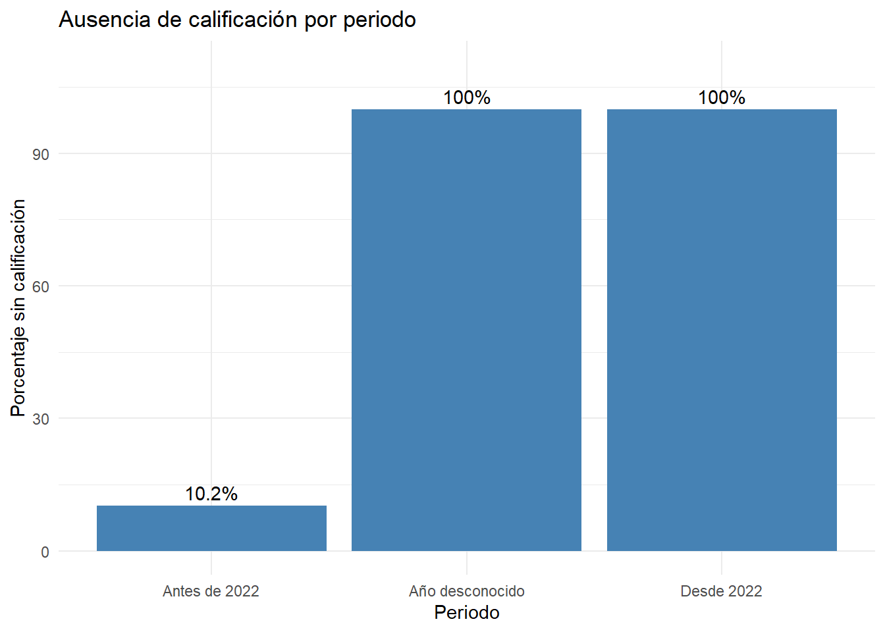
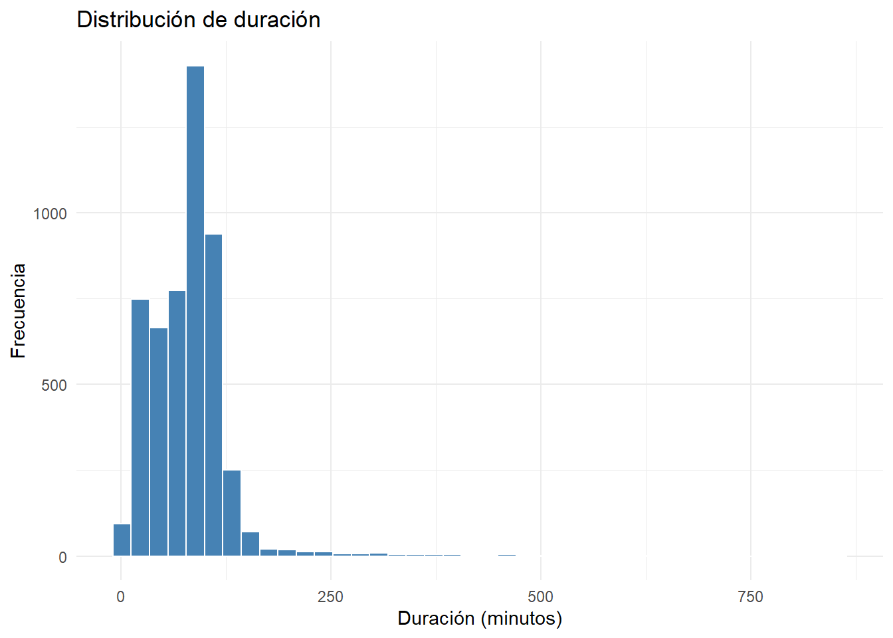
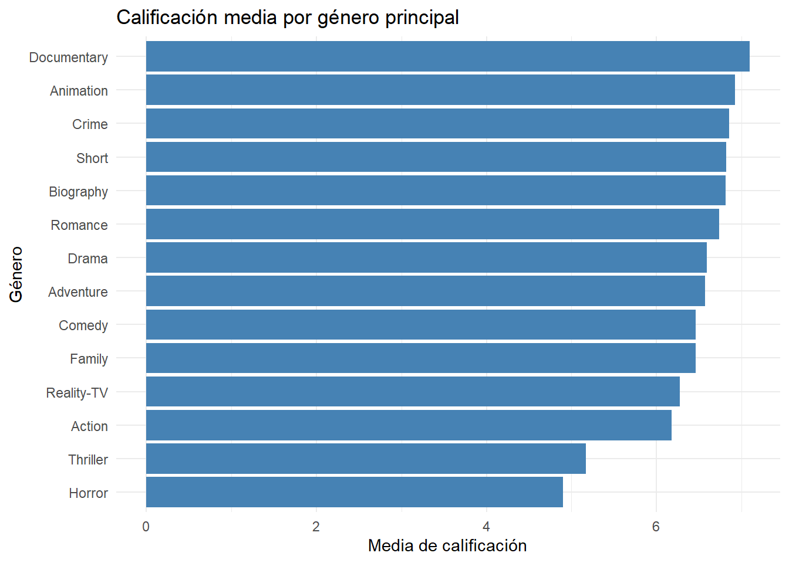
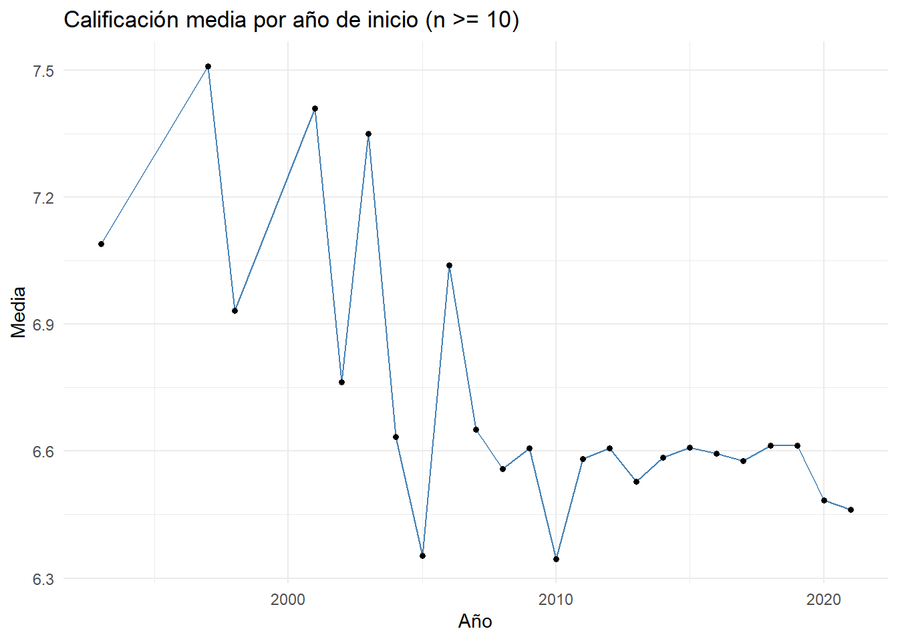

Laboratorio 2A: Calidad de datos con un dataset real
Ciencia de Datos e IA Aplicada — Sesión 2
Author
Edgar Grimaldo Matto Pablo
1 Propósito y pregunta de investigación
Pregunta: ¿Qué características de una producción (año, formato y género) se asocian con su calificación?
Objetivo del laboratorio: diagnosticar y preparar la base de películas y series, evaluar valores faltantes, transformar campos, auditar duplicados, examinar plausibilidad y validar reglas de calidad. Los datos crudos se preservan; las decisiones de limpieza se documentan. La asociación observada es descriptiva y no causal.
2 Preparación e importación reproducible
El archivo CSV original debe estar en data/raw/movies.csv, dentro de la carpeta del proyecto de RStudio. No se usa file.choose() en este documento porque Render requiere una ruta reproducible.
paquetes <-c("dplyr", "tidyr", "readr", "stringr", "ggplot2", "knitr")no_instalados <-setdiff(paquetes, rownames(installed.packages()))if (length(no_instalados)) stop("Instala primero los paquetes: ", paste(no_instalados, collapse=", "))library(dplyr)library(tidyr)library(readr)library(stringr)library(ggplot2)library(knitr)ruta_csv <-"data/raw/movies.csv"if (!file.exists(ruta_csv)) stop("No se encontró data/raw/movies.csv. Copia el CSV a esa carpeta del proyecto antes de usar Render.")# read.csv permite mantener el comportamiento ya usado en la consola del estudiante.movies_raw <-read.csv(ruta_csv, stringsAsFactors =FALSE, check.names =TRUE)stopifnot(all(c("MOVIES", "YEAR", "GENRE", "RATING", "ONE.LINE", "STARS", "VOTES", "RunTime", "Gross") %in%names(movies_raw)))cat("Dimensiones del archivo original:", nrow(movies_raw), "filas x", ncol(movies_raw), "columnas\n")
Dimensiones del archivo original: 9999 filas x 9 columnas
3 Pasos 1 y 2. Diagnóstico inicial de calidad
str(movies_raw)
'data.frame': 9999 obs. of 9 variables:
$ MOVIES : chr "Blood Red Sky" "Masters of the Universe: Revelation" "The Walking Dead" "Rick and Morty" ...
$ YEAR : chr "(2021)" "(2021– )" "(2010–2022)" "(2013– )" ...
$ GENRE : chr "\nAction, Horror, Thriller " "\nAnimation, Action, Adventure " "\nDrama, Horror, Thriller " "\nAnimation, Adventure, Comedy " ...
$ RATING : num 6.1 5 8.2 9.2 NA 7.6 6.8 8.6 7.9 7.4 ...
$ ONE.LINE: chr "\nA woman with a mysterious illness is forced into action when a group of terrorists attempt to hijack a transa"| __truncated__ "\nThe war for Eternia begins again in what may be the final battle between He-Man and Skeletor. A new animated "| __truncated__ "\nSheriff Deputy Rick Grimes wakes up from a coma to learn the world is in ruins and must lead a group of survi"| __truncated__ "\nAn animated series that follows the exploits of a super scientist and his not-so-bright grandson." ...
$ STARS : chr "\n Director:\nPeter Thorwarth\n| \n Stars:\nPeri Baumeister, \nCarl Anton Koch, \nAlexander Scheer, \nKais Setti\n" "\n \n Stars:\nChris Wood, \nSarah Michelle Gellar, \nLena Headey, \nMark Hamill\n" "\n \n Stars:\nAndrew Lincoln, \nNorman Reedus, \nMelissa McBride, \nLauren Cohan\n" "\n \n Stars:\nJustin Roiland, \nChris Parnell, \nSpencer Grammer, \nSarah Chalke\n" ...
$ VOTES : chr "21,062" "17,870" "885,805" "414,849" ...
$ RunTime : int 121 25 44 23 NA 50 110 53 30 44 ...
$ Gross : chr "" "" "" "" ...
knitr::kable(head(movies_raw, 6), caption ="Muestra de registros crudos")
Muestra de registros crudos
MOVIES
YEAR
GENRE
RATING
ONE.LINE
STARS
VOTES
RunTime
Gross
Blood Red Sky
(2021)
Action, Horror, Thriller
6.1
A woman with a mysterious illness is forced into action when a group of terrorists attempt to hijack a transatlantic overnight flight.
Director:
Peter Thorwarth | Stars: Peri Baumeister, Carl Anton Koch, Alexander Scheer, Kais Setti |21,062 | 121| | |Masters of the Universe: Revelation |(2021– ) |Animation, Action, Adventure | 5.0|The war for Eternia begins again in what may be the final battle between He-Man and Skeletor. A new animated series from writer-director Kevin Smith. |Stars: Chris Wood, Sarah Michelle Gellar, Lena Headey, Mark Hamill |17,870 | 25| | |The Walking Dead |(2010–2022) |Drama, Horror, Thriller | 8.2|Sheriff Deputy Rick Grimes wakes up from a coma to learn the world is in ruins and must lead a group of survivors to stay alive. |Stars: Andrew Lincoln, Norman Reedus, Melissa McBride, Lauren Cohan |885,805 | 44| | |Rick and Morty |(2013– ) |Animation, Adventure, Comedy | 9.2|An animated series that follows the exploits of a super scientist and his not-so-bright grandson. |Stars: Justin Roiland, Chris Parnell, Spencer Grammer, Sarah Chalke |414,849 | 23| | |Army of Thieves |(2021) |Action, Crime, Horror | NA|A prequel, set before the events of Army of the Dead, which focuses on German safecracker Ludwig Dieter leading a group of aspiring thieves on a top secret heist during the early stages of the zombie apocalypse. |Director: Matthias Schweighöfer | Stars: Matthias Schweighöfer, Nathalie Emmanuel, Ruby O. Fee, Stuart Martin | | NA| | |Outer Banks |(2020– ) |Action, Crime, Drama | 7.6|A group of teenagers from the wrong side of the tracks stumble upon a treasure map that unearths a long buried secret. |Stars: Chase Stokes, Madelyn Cline, Madison Bailey, Jonathan Daviss |25,858 | 50| |
faltantes_iniciales <-data.frame(variable =names(movies_raw),n_na =as.integer(colSums(is.na(movies_raw))),porcentaje_na =round(100*colMeans(is.na(movies_raw)), 2))knitr::kable(faltantes_iniciales, caption ="Valores NA en el dataset original")
Valores NA en el dataset original
variable
n_na
porcentaje_na
MOVIES
MOVIES
0
0.00
YEAR
YEAR
0
0.00
GENRE
GENRE
0
0.00
RATING
RATING
1820
18.20
ONE.LINE
ONE.LINE
0
0.00
STARS
STARS
0
0.00
VOTES
VOTES
0
0.00
RunTime
RunTime
2958
29.58
Gross
Gross
0
0.00
cat("Copias exactas de filas:", sum(duplicated(movies_raw)), "\n")
Copias exactas de filas: 431
faltantes_iniciales %>%ggplot(aes(x =reorder(variable, n_na), y = n_na)) +geom_col(fill ="steelblue") +coord_flip() +labs(title ="Valores NA por variable", x ="Variable", y ="Número de NA") +theme_minimal()

Interpretación: el número de NA representa únicamente los faltantes explícitos. Los textos vacíos y los valores centinela se revisan por separado.
4 Paso 3. Tipos de datos, expresiones regulares y valores centinela
Evidencia de transformación sin sobrescribir las columnas crudas
MOVIES
YEAR
anio_inicio
anio_fin
es_serie
VOTES
votos
Gross
recaudacion_millones
Blood Red Sky
(2021)
2021
NA
FALSE
21,062
21062
NA
Masters of the Universe: Revelation
(2021– )
2021
NA
TRUE
17,870
17870
NA
The Walking Dead
(2010–2022)
2010
2022
TRUE
885,805
885805
NA
Rick and Morty
(2013– )
2013
NA
TRUE
414,849
414849
NA
Army of Thieves
(2021)
2021
NA
FALSE
NA
NA
Outer Banks
(2020– )
2020
NA
TRUE
25,858
25858
NA
The Last Letter from Your Lover
(2021)
2021
NA
FALSE
5,283
5283
NA
Dexter
(2006–2013)
2006
2013
TRUE
665,387
665387
NA
cat("Sinopsis faltantes tras tratar el centinela:", sum(is.na(movies_clean$sinopsis)), "\n")
Sinopsis faltantes tras tratar el centinela: 1265
Nota:es_serie es un indicador provisional construido a partir del patrón del año, no una clasificación verificada del formato audiovisual. La recaudación se interpreta en millones si los valores originales usan $...M; otras unidades se deben auditar antes de analizarlas.
5 Paso 4. Análisis de faltantes y mecanismo de ausencia
analisis_faltantes %>%ggplot(aes(x = periodo, y = porcentaje)) +geom_col(fill ="steelblue") +geom_text(aes(label =paste0(porcentaje, "%")), vjust =-0.4) +coord_cartesian(ylim =c(0, 110)) +labs(title ="Ausencia de calificación por periodo", x ="Periodo", y ="Porcentaje sin calificación") +theme_minimal()

Interpretación: la asociación del año observado con la ausencia es compatible con MAR bajo supuestos adicionales y contradice la idea de pérdidas completamente independientes de las covariables; no demuestra MAR frente a MNAR. El grupo sin año requiere un examen específico. Las calificaciones sin observar no se imputan en el dataset final.
rating_original <- movies_clean$ratingrating_demo <-ifelse(is.na(rating_original), median(rating_original, na.rm =TRUE), rating_original)comparacion_imputacion <-data.frame(escenario =c("Observados", "Mediana (solo demostración)"),n =c(sum(!is.na(rating_original)), length(rating_demo)),media =round(c(mean(rating_original, na.rm =TRUE), mean(rating_demo)), 2),desviacion_estandar =round(c(sd(rating_original, na.rm =TRUE), sd(rating_demo)), 2))knitr::kable(comparacion_imputacion, caption ="Efecto de imputar con la mediana: demostración, no dataset final")
Efecto de imputar con la mediana: demostración, no dataset final
escenario
n
media
desviacion_estandar
Observados
8179
6.92
1.22
Mediana (solo demostración)
9999
6.95
1.11
6 Paso 5. Duplicados y unidad de análisis
movies_sin_duplicados <- movies_raw %>%distinct()resumen_unicidad <-data.frame(etapa =c("Crudos", "Sin copias exactas"),filas =c(nrow(movies_raw), nrow(movies_sin_duplicados)))knitr::kable(resumen_unicidad, caption ="Eliminación de copias exactas")
Eliminación de copias exactas
etapa
filas
Crudos
9999
Sin copias exactas
9568
titulos_repetidos <- movies_clean %>%count(MOVIES, name ="frecuencia") %>%filter(frecuencia >1) %>%arrange(desc(frecuencia))knitr::kable(head(titulos_repetidos, 10), caption ="Ejemplos de títulos repetidos")
cat("Claves de título duplicadas:", sum(duplicated(movies_obras$titulo_clave)), "\n")
Claves de título duplicadas: 0
Decisión: el título normalizado se usa como clave provisional para el ejercicio. Puede reunir obras homónimas o registros de episodios; elegir la fila con mayor cantidad de votos puede inducir sesgo. No equivale a un identificador único certificado de IMDb.
7 Paso 6. Plausibilidad y unidades de duración
movies_obras <- movies_obras %>%mutate(duracion_extrema =!is.na(duracion_min) & duracion_min >300)knitr::kable( movies_obras %>%filter(duracion_extrema) %>%count(es_serie),caption ="Duraciones superiores a 300 minutos por indicador provisional de serie")
Duraciones superiores a 300 minutos por indicador provisional de serie
movies_obras %>%ggplot(aes(x = duracion_min)) +geom_histogram(bins =40, fill ="steelblue", color ="white") +labs(title ="Distribución de duración", x ="Duración (minutos)", y ="Frecuencia") +theme_minimal()

Decisión: valores superiores a 300 minutos se marcan sin eliminar; requieren revisión de la unidad de medida (película, episodio o duración total de serie).
Reglas de validez y consistencia (NA evaluados aparte)
registros
anio_invalido
rating_invalido
votos_negativos
duraciones_no_positivas
duraciones_superiores_300
anios_inconsistentes
6422
0
0
0
0
41
0
La validación del catálogo de géneros y la exactitud de las obras requieren una fuente de referencia adicional. El rango 300 minutos es una alerta de plausibilidad, no un criterio universal de invalidez.
9 Cierre. Calificación por género, año y formato
movies_obras <- movies_obras %>%mutate(genero_principal =str_trim(str_extract(as.character(GENRE), "^[^,]+")),genero_principal =na_if(genero_principal, ""))resumen_generos <- movies_obras %>%filter(!is.na(rating), !is.na(genero_principal)) %>%group_by(genero_principal) %>%summarise(n =n(), media =mean(rating), mediana =median(rating), de =sd(rating), .groups ="drop") %>%filter(n >=30) %>%arrange(desc(media))knitr::kable(resumen_generos %>%mutate(across(c(media, mediana, de), ~round(.x, 2))),caption ="Calificación por género principal, grupos con n >= 30")
Calificación por género principal, grupos con n >= 30
genero_principal
n
media
mediana
de
Documentary
882
7.10
7.2
0.89
Animation
707
6.92
7.1
1.11
Crime
322
6.86
7.0
1.17
Short
31
6.82
7.0
1.38
Biography
116
6.82
6.9
0.94
Romance
32
6.73
6.7
1.22
Drama
928
6.59
6.6
1.09
Adventure
108
6.57
6.7
1.26
Comedy
1282
6.46
6.5
1.22
Family
43
6.46
6.6
1.22
Reality-TV
108
6.27
6.5
1.23
Action
660
6.18
6.3
1.30
Thriller
40
5.17
5.1
1.17
Horror
129
4.90
4.8
1.26
resumen_generos %>%ggplot(aes(x =reorder(genero_principal, media), y = media)) +geom_col(fill ="steelblue") +coord_flip() +labs(title ="Calificación media por género principal", x ="Género", y ="Media de calificación") +theme_minimal()

resumen_anios <- movies_obras %>%filter(!is.na(anio_inicio), !is.na(rating)) %>%group_by(anio_inicio) %>%summarise(n =n(), media =mean(rating), .groups ="drop") %>%filter(n >=10)resumen_anios %>%ggplot(aes(x = anio_inicio, y = media)) +geom_line(color ="steelblue") +geom_point(size =1.3) +labs(title ="Calificación media por año de inicio (n >= 10)", x ="Año", y ="Media") +theme_minimal()

# 'es_serie' es proxy basado en YEAR; su interpretación NO es validación del formato.resumen_formato_provisional <- movies_obras %>%filter(!is.na(rating), !is.na(es_serie)) %>%group_by(es_serie) %>%summarise(n =n(), media =round(mean(rating), 2), .groups ="drop")knitr::kable(resumen_formato_provisional, caption ="Comparación exploratoria por indicador provisional de serie")
Comparación exploratoria por indicador provisional de serie
es_serie
n
media
FALSE
3906
6.37
TRUE
1612
7.14
Conclusión metodológica: las diferencias entre promedios son asociaciones descriptivas en una muestra depurada bajo un criterio provisional de unicidad. No son efectos causales. La pérdida de calificaciones por año y la selección del registro más votado pueden alterar la representatividad y deben reconocerse como limitaciones.
10 Registro de decisiones y reproducibilidad
registro <-data.frame(codigo =sprintf("D%02d", 1:7),decision =c("Preservar datos crudos", "Extraer año, votos y recaudación", "Cambiar centinela Add a Plot por NA", "No imputar calificaciones en análisis final", "Eliminar copias exactas y auditar títulos", "Marcar duración >300 sin borrar", "Comparar calificaciones por género, año y proxy de formato"),fundamento =c("Trazabilidad", "Validez de tipos", "Completitud", "Evitar datos artificiales", "Unicidad bajo criterio explícito", "Plausibilidad sin pérdida de información", "Responder exploratoriamente la pregunta"))knitr::kable(registro, caption ="Bitácora de decisiones")
Bitácora de decisiones
codigo
decision
fundamento
D01
Preservar datos crudos
Trazabilidad
D02
Extraer año, votos y recaudación
Validez de tipos
D03
Cambiar centinela Add a Plot por NA
Completitud
D04
No imputar calificaciones en análisis final
Evitar datos artificiales
D05
Eliminar copias exactas y auditar títulos
Unicidad bajo criterio explícito
D06
Marcar duración >300 sin borrar
Plausibilidad sin pérdida de información
D07
Comparar calificaciones por género, año y proxy de formato
Responder exploratoriamente la pregunta
# Se conservan los archivos originales y se guardan salidas nuevas.dir.create("data/processed", recursive =TRUE, showWarnings =FALSE)write.csv(movies_obras, "data/processed/movies_obras_curado.csv", row.names =FALSE, na ="")write.csv(registro, "data/processed/registro_decisiones_lab2a.csv", row.names =FALSE)cat("Archivos generados en data/processed/\n")
Archivos generados en data/processed/
11 Conclusiones del Laboratorio 2A
11.1 Calidad de los datos
El análisis permitió evaluar la calidad de una base de 9,999 registros de películas y series, mediante procedimientos reproducibles implementados en R y Quarto.
El diagnóstico inicial identificó 1,820 valores faltantes en RATING y 2,958 en RunTime. Además, se reconocieron 1,265 sinopsis que contenían el texto centinela “Add a Plot”, posteriormente convertido en NA.
11.2 Unicidad y valores atípicos
La auditoría identificó 431 copias exactas, cuya eliminación dejó 9,568 registros.
Posteriormente, la consolidación provisional por título normalizado produjo 6,422 registros únicos. Este procedimiento requiere cautela, porque pueden existir obras diferentes con un mismo título.
Se identificaron 41 producciones con duraciones superiores a 300 minutos. Estos registros fueron marcados y conservados por representar posibles formatos especiales o duraciones acumuladas.
11.3 Respuesta a la pregunta de investigación
El análisis descriptivo identificó diferencias en las calificaciones según el género principal, el año de inicio y un indicador provisional del formato.
Los documentales presentaron una calificación media de 7.10, seguidos por las producciones de animación (6.92). El género terror registró una calificación media de 4.90.
Según el indicador provisional de serie, los registros clasificados como TRUE presentaron una calificación media de 7.14, frente a 6.37 en los registros FALSE.
También se observaron fluctuaciones temporales en las calificaciones medias.
Estos resultados representan asociaciones descriptivas, sin demostrar causalidad ni significancia estadística.
11.4 Limitaciones metodológicas
Los resultados deben interpretarse considerando la presencia de valores faltantes, la selección de registros durante la consolidación por título y las limitaciones del indicador es_serie.
La clasificación por título no constituye un identificador inequívoco de obra, y el indicador es_serie se obtuvo a partir de patrones del año, sin una validación externa del formato.
Asimismo, no es posible confirmar MAR frente a MNAR únicamente mediante el análisis descriptivo.
11.5 Conclusión general
El laboratorio demuestra la importancia de evaluar la completitud, validez, consistencia, unicidad y plausibilidad antes de utilizar los datos en análisis estadísticos o modelos de inteligencia artificial.
La conservación de los datos originales, la documentación de las transformaciones y las reglas explícitas de validación fortalecen la transparencia y reproducibilidad de la investigación.